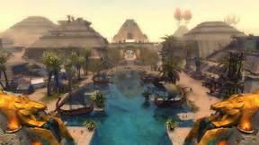

Guild Wars 2
This is the game I spend most of my time on currently. I'm really into the maps they added with the expansion since they're made to be traveled using a glider and other means. I'm also excited for the new expansion, Path of Fire, which is coming out this Friday.
Bloodborne
I enjoyed the Dark Souls series starting from the original Dark Souls. I enjoy the series for the combat since it's fun to just try different ways to fight against bosses and other things. Bloodborne is my favorite because of how well the atmosphere was pulled off and the speed of the combat is a lot faster than the Souls games. Also the trick weapons are pretty cool. A handaxe that turns into a cleaver, a cane that turns into a bladed whip? I mean, that's pretty cool, dude.
Monster Hunter
I've played the Monster Hunter series since 3 Ultimate on the WiiU. At first, I wasn't too into it, but when I started playing the game after taking a break from it for a while, I really started getting into it. I enjoyed 4 Ultimate and Generations on the 3DS but overall, I had more fun with 4U since it had more content, some of it being some cool fights. I'm hyped up for Monster Hunter World coming to the PS4 next year since it looks like they've really gone all out on making a game for a home console rather than a handheld.
Persona 5

I thought it was a fantastic game if not somewhat slow at parts. I really enjoyed the writing of the characters and just seeing the interactions when hanging out with them. The combat and exploring the dungeons in the game was fun. The music was really good too. I'd recommend the game.